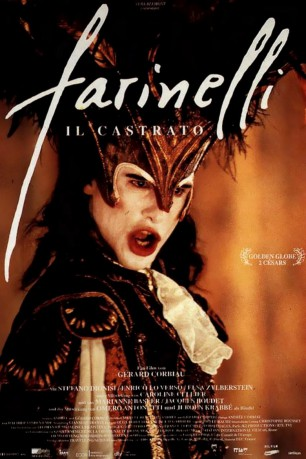
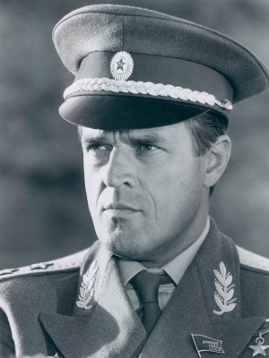

#8287 Farinelli, der Kastrat
 
 IMDB-Wertung: 6.9 / 10
IMDB-Wertung: 6.9 / 10  Metascore: 0
Metascore: 0 
Italienisches Liebesdram über die Lebensgeschichte Carlo Broschis, der unter dem Künstlernamen Farinelli eine bewegende Karriere als Opernsänger machte. Schon als Kind wurde seine bedeutende Stimme entdeckt, die man durch eine Kastration zu erhalten versuchte. Als Erwachsener lagen ihm Publikum und Frauen weltweit zu Füssen.
Jahr: 1994
Dauer: 110 Minuten
FSK: 12
Land: Frankreich Studio: Nil Film Art & Entertainment GmbHTonspuren:
Untertitel:
Auflösung: 1080p (1920x1040) Größe: 7833 MB
Genre: Drama, Musik, Biographie
Regisseur: Gérard Corbiau
Drehbuch: Andrée Corbiau
Soundtrack:
Darsteller:
- Stefano Dionisi als Carlo Broschi (Farinelli)
 Enrico Lo Verso als Riccardo Broschi
Enrico Lo Verso als Riccardo Broschi Elsa Zylberstein als Alexandra
Elsa Zylberstein als Alexandra-  Jeroen Krabbé als George Frideric Handel
- Caroline Cellier als Margareth Hunter
- Omero Antonutti als Nicola Porpora
- Pier Paolo Capponi als Broschi
 Jacques Boudet als Felipe V
Jacques Boudet als Felipe V- Xenia Seeberg als Servant girl (uncredited)
- Renaud du Peloux de Saint Romain als Benedict
- Marianne Basler als Countess Mauer
- Graham Valentine als Prince of Wales
- Delphine Zentout als Young admirer
- Richard Reeves als
- Jonathan Fox als
- Jo Betzing als
- Karl-Heinz Dickmann als
- Stefan Mazel als
- Wolfgang Grindemann als
- Hubert Burczek als
- Harald Gotz als
- Andreas Ulich als
- Alfonso Asenjo als
- Carlos Castel als Piero (uncredited)
Datei: X:\1994\Farinelli, der Kastrat (1994, FSK12, 1920x1040).mkv seit 20.02.2018
Festplatte: HD 1992-1995
 Es gibt insgesamt 67 Filme in der Gruppe '1994'
Es gibt insgesamt 67 Filme in der Gruppe '1994'